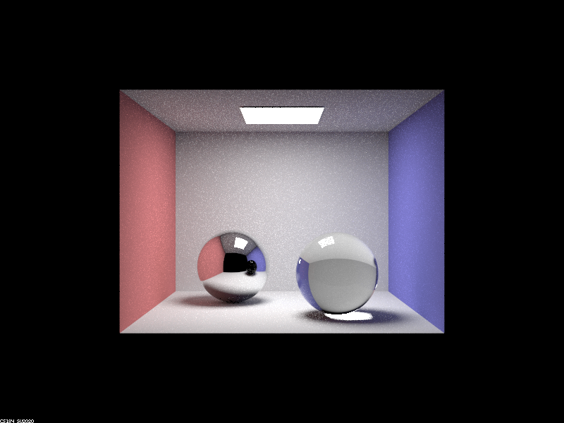

We finished Part1, Part2, Part3 in this assignment!
Part 1. Mirror and Glass Materials
Show a sequence of six images of scene `CBspheres.dae` rendered with `max_ray_depth` set to 0, 1, 2, 3, 4, 5, and 100. The other settings should be at least 64 samples per pixel and 4 samples per light. Make sure to include all screenshots.

|
|
|
|

|

|
|

|
The pictures showed above is generated in the following settings: 256 samples per pixel and 4 samples per light.
Point out the new multibounce effects that appear in each image.
- m = 0, we only have direct light source.
- m = 1, we have one bounce, so we can see the light perfectly bounces from the light source to our camera.
- m = 2, we now can bounce twice, so the sphere on the back starts to have illumination.
- m = 3, we now can observe light on the front sphere.
-
m = 4, there are two differences: we now can observe a concentrated spot on light on the right wall and the reflectance
of the front ball inside the second ball begins to have light. To be more specific, refer to the blue mark up on the following picture:
multibounce effects happen on m = 4 - It is very hard to see the differences start from m = 4.
Explain how these bounce numbers relate to the particular effects that appear. Make sure to include all screenshots.
Here is the explanation of why these particular multibounce effects happen:
- m = 0 equals to zero_bounce_illumination, so only direct lighting effects are seen.
- m = 1 equals to one_bound_illumination., so we can only see the light where it can direcly reflect the light from the light source to our camera.
- m = 2, we can see the light on the back sphere, because we now can observe the light that is first reflected from other objects and reflected from the back sphere to the camera. We can not see the front sphere because it relies on refraction.
- m = 3, we can finally see the refraction of light inside the ball and it appears as glass. Why we need three bounces: The light is first reflected from other objects to the ball (1 bounce) and the light need to pass through the ball through refraction (2 bounces). So the total required number of bounces is 3. We also notice that the reflection of the walls of the box on the mirror ball are lit, as light rays have enough depth to bounce on the wall, on to the mirror ball, and into the camera.
- m = 4, there are two differences: we now can observe a concentrated spot on light on the right wall and the reflectance of the front ball inside the second ball begins to have light. Why these differences happen: because we have finished refraction through 3 bounces so the light after 3 bounces can reflect on other objects to generate light reflection.
- It is very hard to see the differences start from m = 4 because after four bounces already capture all the important lighting effects. The light already passes through all the glass spheres in this scene and return back to the camera after 4 bounces.
Part 2. Microfacet Material
Show a screenshot sequence of 4 images of scene `CBdragon_microfacet_au.dae` rendered with $\alpha$ set to 0.005, 0.05, 0.25 and 0.5. The other settings should be at least 128 samples per pixel and 1 samples per light. The number of bounces should be at least 5. Describe the differences between different images. Note that, to change the $\alpha$, just open the .dae file and search for `microfacet`.
|
|
|
|
|
|
We changed the Alpha value from 0.005 to 0.5. Alpha value is the roughness value of a macro surface. As the instruction mentioned, The smaller alpha is, the smoother the macro surface will be. In other words, the macro surface tends to be diffuse when alpha is large and glossy when alpha is small. This phenomena can be observed from the pictures above. For the dragon with alpha = 0.005, we can easily see the reflection of walls on the dragon's surface.
Show two images of scene `CBbunny_microfacet_cu.dae` rendered using cosine hemisphere sampling (default) and your importance sampling. The sampling rate should be fixed at 64 samples per pixel and 1 samples per light. The number of bounces should be at least 5. Briefly discuss their difference.
|
|
|
Here is an explanation of cosine hemisphere sampling and importance sampling:
- Cosine hemisphere sampling: Cosine hemisphere sampling involves generating random points on the hemisphere centered at the surface normal, where the probability of selecting a point is proportional to the cosine of the angle between the surface normal and the direction of the point.However, cosine hemisphere sampling does not take into account the reflectance properties of the material, and can result in a large number of samples being wasted on areas of the hemisphere where the reflectance is low. So because of our low sampling rate, the rendering result on the microfacet surface contains a lot of noise.
- Importance sampling: Importance sampling involves generating samples based on the reflectance properties of the material. This means that samples are more likely to be generated in areas where the reflectance is high, resulting in a more efficient use of the samples. This can lead to a significant improvement in rendering quality and efficiency, which can be observed in the example image.
Show at least one image with some other conductor material, replacing `eta` and `k`. Note that you should look up values for real data rather than modifying them arbitrarily. Tell us what kind of material your parameters correspond to.
|
|
|
The original material of this dragon sculpture is gold as it is shown in 2.1 (the first experiment in Microfacet rendering). We changed its material to silver and copper and have a nice reasonable result.
Part 3. Environment Lightl
Pick one *.exr* file to use for all subparts here. Include a converted *.jpg* of it in your website so we know what map you are using.We choose a different *.exr* file than the original instruction. We choose ennis.exr for our following experiments.
In a few sentences, explain the ideas behind environment lighting (i.e. why we do it/how it works).
Here is the illustration of the ideas behind environment lighting:
- Why do we need environment lighting: By using an environment lighting, the lighting of the scene can be made more realistic and immersive, as the objects in the scene will reflect the lighting information from their surroundings. This can help to create a more convincing virtual environment for applications such as video games, virtual reality, and architectural visualization.
- How environment lighting works: Environment lighting refers to the use of an environment map to simulate the effect of indirect lighting in a scene.An environment map is a texture that encodes the lighting information of the surrounding environment as seen from a given viewpoint.The environment map is then used to illuminate objects in the scene by calculating the indirect lighting contribution from the environment.In this assignment, we implemented two sampling methods (Importance sampling and uniform sampling) to get the corresponding environment light for each rendering ray.
Show the *probability_debug.png* file for the *.exr* file you are using, generated using the `save_probability_debug()` helper function after initializing your probability distributions.
Use the `bunny_unlit.dae` scene and your environment map *.exr* file and render two pictures, one with uniform sampling and one with importance sampling. Use 4 samples per pixel and 64 samples per light in each. Compare noise levels. Make sure to include all screenshots.
|
|
|
Use a different image (if you did part 2, we recommend `bunny_microfacet_cu_unlit.dae`) and your environment map *.exr* file and render two pictures, one with uniform sampling and one with importance sampling. Use 4 samples per pixel and 64 samples per light in each. Compare noise levels. Make sure to include all screenshots.
|
|

|